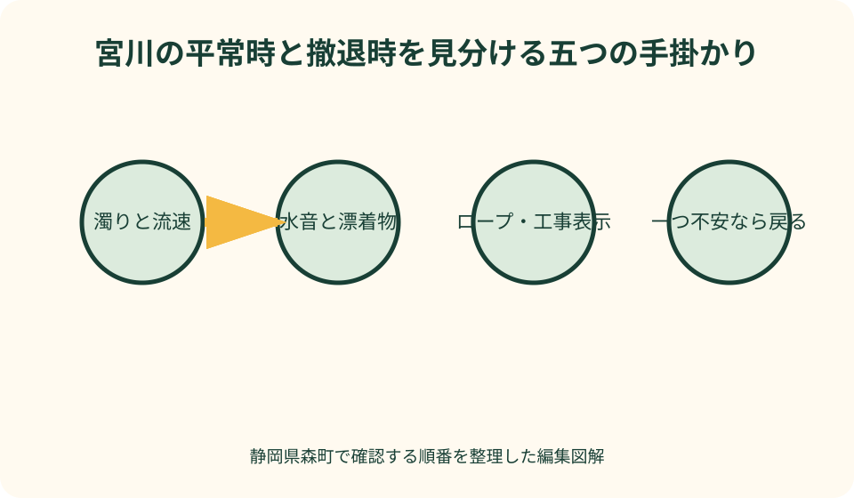
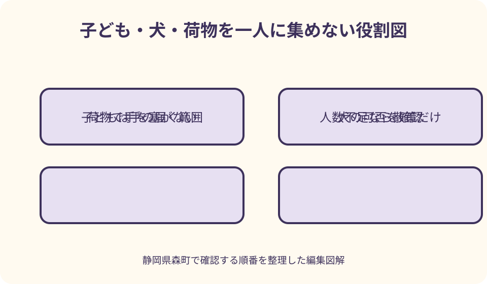

小國神社・宮川散策｜最終確認 2026-08-10
静岡県森町・小國神社の宮川散策｜水位と足元を見て歩く神域の川辺
宮川は、本宮山麓から小國神社の境内を流れる清流です。神社公式は川沿いの散策路で桜や紅葉を楽しめると案内し、水辺利用については子どもから目を離さないこと、増水時を避けること、火気を使わないことなどを求めています。ただし、過去の案内が今日の立入可否を保証するわけではありません。参拝地の川であることを前提に、当日の表示、水の速さ、足元、同行者を見て、川へ近づかず散策だけにする判断も持ちます。

宮川を参拝地の川として理解する
小國神社公式の境内案内は、神社が本宮山の山麓から流れる宮川のほとりに鎮座すると説明しています。宮川は観光写真の背景だけではなく、約30万坪と案内される神域の自然を形づくる水の流れです。河川公園や民間の水遊び施設と同じ設備、監視、利用条件があると想定しません。
神社公式の「境内の自然」は、宮川を本宮山麓から境内へ流れる清流とし、川沿いの散策路で桜や紅葉を楽しめると紹介しています。この記述から確かめられるのは散策の見どころです。川へ入ることが毎日、全区間、全員に許可されているという意味までは含みません。
水辺へ向かう前に、まず鳥居、参道、社殿という参拝の場を意識します。大声、音楽、火気、放置ごみなど、一般の野外遊びでも避ける行為に加え、祈りの場で静かに過ごす人を妨げない配慮が必要です。遊具やレジャー用品を広げる前に、現地の禁止表示を読みます。
宮川沿いの写真だけを目的に訪れても、神社の管理する境内に入ることは変わりません。撮影位置を求めて護岸や植栽へ踏み込まず、橋や園路を占有しません。祭典、工事、自然災害後などに通れない場所があれば、理由を自己判断で軽く見ず、迂回または退出します。
この記事は川遊びの許可証ではありません。2026年8月10日に確認できた神社と森町の公式情報を基に、当日判断の順番を示します。利用可否が不明な場面では神社へ確認し、返答を得られない場合は川へ入らず、参道から水の景色を眺める散策へ切り替えます。
過去の水遊び案内を常設許可に読み替えない
小國神社は2024年の火気取り扱いに関するお知らせで、夏に宮川で水遊びを楽しむ家族がいることに触れ、子どもから目を離さないこと、増水時を避けること、車両に注意することなどを案内しました。同時に、境内と宮川沿い、山林区域での火気を厳しく禁じています。
このお知らせは水辺での注意を具体的に知る重要な一次情報ですが、掲載から年月が過ぎても同じ場所へ自由に入れるという恒久ルールではありません。護岸工事、増水、行事、植生保護で状況は変わります。記事の日付を確認し、現地の新しい表示と職員の案内を上位に置きます。
水遊びという言葉から、泳げる深さ、監視員、救命設備、更衣室があると想像しません。神社公式のお知らせは、子どもの監督や増水回避を来訪者へ求めています。水が浅く見えても、流れ、石の隙間、急な深み、冷たさがあるため、足を水へ入れる前に危険を評価します。
バーベキュー、携帯コンロ、炭、たき火は持ち込みません。神社は許可した指定場所以外の火気を禁じ、喫煙所外のたばこも対象としています。川辺で食事をする場合も、火を使わず、場所の利用可否を確認し、包装、食べ残し、濡れた衣類をすべて持ち帰ります。
第3駐車場が川に近いという過去案内も、当日の開設や空きを保証しません。近い区画へ停めるために入口で待ったり、満車区画を周回したりせず、交通案内と誘導員に従います。水辺用品が多いほど、遠い区画から運べる量へ減らしておくことが現実的です。
水位と流れを五つの手掛かりで見る
第一の手掛かりは水の色です。普段を知らない訪問者でも、濁り、泡、枝葉の流下が目立つなら、上流で雨が降った可能性を考えます。足元が乾いていても上流の雨で水量が増えることがあるため、現在地の空だけで安全を決めません。
第二は水の音です。会話を遮るほど大きい、石に当たる音が強い、流れの幅全体で勢いがあると感じたら、水際へ近づきません。写真と比べて水位を推測するより、今その場で退避方向を確保できるかを見ます。違和感を感じた時点で散策路側へ戻ります。
第三は濡れ跡と漂着物です。石や護岸に新しい泥、葉、枝が付いていれば、直前まで水が上がっていた可能性があります。水面が下がった後も石は滑り、地面の中に水が残ります。晴れたからすぐ安全になったとは考えず、雨の翌日は特に慎重にします。
第四は現地表示と立入区分です。ロープ、カラーコーン、工事柵、注意札があれば、その内側へ入りません。表示が倒れている、文字が読めない場合も許可されたとは解釈せず、職員へ知らせます。SNSの過去写真に人が写る場所でも、当日閉じていれば立ち止まって戻ります。
第五は自分たちの状態です。水が穏やかでも、見守る大人が一人、子どもが複数、犬が興奮している、靴が滑る、雷雲が近いなら条件は不十分です。川そのものだけでなく、人、装備、天候の一つでも管理できないときは、水辺へ下りない撤退判断をします。
滑りと転倒を靴・手・視線から減らす
川辺では、濡れた石、落葉、苔、泥、木の根が重なることがあります。底が平らな街歩き用の靴や、脱げやすいサンダルだけで向かわず、かかとが固定され、靴底に溝があり、濡れても歩行を続けられる物を選びます。靴の名称ではなく、実際の摩耗状態も確認します。
転びそうな場面で両手がふさがらないよう、荷物は背負える鞄へまとめます。傘、カメラ、子どもの手、犬のリードを一人で同時に持つ計画は避けます。同行者同士で、子どもを見る人、犬を持つ人、荷物を持つ人を分け、撮影時も役割を勝手に交代しません。
足元ばかり見て歩くと、枝、他の参拝者、前方の段差へ気づくのが遅れます。数歩進んだら停止して周囲を見る、撮影は止まってから行う、後ろ向きに下がらないという動きを決めます。景色を見ながら歩かず、見る時間と移動を分けます。
水に触れる可能性がある日は、タオル、替えの靴下、下着を含む着替え、濡れ物用の袋を用意します。服が濡れたまま参拝や車移動を続けると体が冷えます。夏でも木陰と水で体感温度が下がるため、乾いた状態へ戻せない装備なら水へ近づきません。
けがをした場合に洗い流せば済むと決めず、出血、強い痛み、頭部打撲、歩けない状態なら散策を中止します。救急車を呼ぶ場所や携帯電話の状況を水辺へ入ってから考えず、神社職員へ知らせられる位置と駐車場所を家族で共有します。

子どもの監督は距離ではなく手の届く範囲で考える
神社公式は宮川での水遊びについて、子どもから目を離さないよう求めています。浅く見える場所でも、子どもは石を踏み外し、流れる物を追い、急にしゃがみます。「見えているから大丈夫」ではなく、すぐ体を支えられる距離に大人を置きます。
大人一人で年齢の違う子どもを複数見る日は、水際へ下りない選択が安全です。一人が転んだとき、別の子を残して助けに行く状況を作らないためです。兄や姉に幼い子の監督を任せず、全員が散策路から川を見るか、別の大人がそろう日に変更します。
水へ石を投げる、護岸の石を動かす、植物や生き物を持ち帰る行為をさせません。神社のお願いは、動植物を傷つけないことや、動かした石を元へ戻すことにも触れています。最初から触れずに観察する方が、子どもにも分かりやすく、川の環境を変えません。
浮き具や水遊び道具を持てば安全になるとは限りません。流される道具を追う、他の参拝者の通行を妨げる、遊べる範囲を広げ過ぎる原因にもなります。現地で利用可否を確かめ、認められていても、道具を使うことで監督が難しくなるなら持ち込みません。
帰る合図を事前に決めます。水が濁る、雨が降る、雷が聞こえる、子どもの唇が冷える、靴が脱げる、混雑で手をつなげない、どれか一つで終了します。もう少し遊びたいという希望より、乾いた服へ着替えて安全に駐車場へ戻ることを優先します。
犬は同伴可能と決めつけず神社へ確認する
確認した神社公式の境内自然、施設、宮川の火気案内には、犬の同伴を一律に許可または禁止する現在の包括的な説明を見つけられませんでした。写真や口コミに犬が写っていても、今日の全区域で同伴できる根拠にはなりません。訪問前に神社へ最新の扱いを確認します。
同伴が認められる場合も、宮川へ犬を入れてよいか、参道、社殿周辺、休憩所など立ち入れる範囲は別に確認します。境内に入れることと、水へ入れることは同じ条件ではありません。現地表示が厳しい場合は、事前の一般案内より当日の区分を優先します。
リードは伸ばし切らず、犬とすれ違う人の間に飼い主が立ちます。川音、子どもの声、他の犬、野生動物で急に動く可能性があります。片手に撮影機器、もう片手にリードという状態で水際へ下りず、犬の制御だけを担当する大人を一人置きます。
排せつ物は必ず回収し、尿の扱いも神社の案内に従います。宮川へ流せばよい、山林だから残してよいとは考えません。飲み水、足を拭くタオル、排せつ物袋を持ち、境内のごみ箱へ捨てられると推測せず自宅まで持ち帰ります。
暑い時期は路面温度と車内待機、寒い時期は濡れた被毛による冷えを考えます。犬を車へ残して参拝する代案は、気温や時間によって危険です。犬と入れない区域があるなら、交代で短く参拝するか、同伴しない日に改める方法を選びます。
季節で見どころと危険を入れ替える
春は神社公式が宮川沿いの桜を紹介しています。花を見上げる時間が増える一方、雨、散った花びら、落ちた枝で足元が滑ることがあります。撮影場所を求めて水際へ寄らず、園路上で止まり、花と川を同じ画面へ入れられなくても安全な位置を選びます。
初夏から夏は青もみじと宮川のせせらぎを楽しめます。森町公式も小國神社の青もみじを観光情報として紹介しています。木陰でも熱中症は起こるため、水辺の涼しさを気温の低さと同一視せず、飲料、帽子、休憩を用意します。急な雨と上流の降水にも注意します。
秋は宮川沿いの紅葉が大きな見どころです。森町公式と神社公式は、色づきやライトアップを年ごとに案内しています。見頃の休日は散策路、橋、駐車場が混みやすいため、子どもや犬を連れて水際へ下りる余地がないと感じたら、参道側から観賞するだけにします。
紅葉期の落葉は乾いて見えても、その下に濡れた石や木の根を隠します。夜間の催しがある年は、昼に見えた段差が照明の陰に入ることもあります。年次の開催情報を確認し、懐中電灯で立入範囲を広げるのではなく、明るい公式動線だけを歩きます。
冬は水が澄んで見えても、低い水温、凍結、日没の早さがあります。濡れた靴や衣類で帰路を歩く負担は夏より大きくなります。水へ触れることを目的にせず、参拝と短い川辺観察へ絞り、橋や日当たりのある場所から景色を見ます。
参拝・休憩・駐車場へ戻る順を決める
宮川散策を参拝の前にするか後にするかは、唯一の正解がありません。ただし、濡れた服や泥の付いた靴で社殿へ向かう状況は避けたいところです。水辺へ近づく可能性があるなら先に参拝し、その後に短く散策し、着替えて帰る順が組みやすいかを検討します。
子どもが先に川を見て興奮すると、参拝へ気持ちを切り替えにくい場合があります。家族で鳥居をくぐる前に、今日は参拝、川を見る、休憩、帰るという順を伝えます。途中で水量が多ければ川を省くことも、最初から予定の一部として説明します。
神社公式は参道入口付近のお手洗いと参拝者休憩所を案内しています。営業時間や利用条件を永続情報として固定せず、当日の案内を確認します。川辺から疲れた人を一人で休憩所へ戻らせず、家族の一人が付き添い、合流場所を決めます。
駐車場へ戻る前に、靴の泥、濡れた衣類、ごみ、犬の足を確認します。川の水で道具や犬を洗えばよいとは考えず、持参した水とタオルを使い、洗い場が必要なら利用可否を尋ねます。駐車区画で濡れ物を広げず、袋へ入れて車内を整えます。
公共交通の帰りがある人は、川辺で過ごせる時間を往路到着後に決めます。水遊びの区切りを子どもの気分だけに任せると、着替えと停留所までの移動が足りません。帰りの乗車時刻から、着替え、トイレ、歩行の余白を引いた時刻を終了合図にします。

良い点：同じ川で季節の変化を感じられる
宮川沿いは、春の桜、初夏の青もみじ、秋の紅葉と、同じ流れの周辺で季節の違いを見られます。一度に多くの場所を回らなくても、時期を変えて再訪する理由があります。自然の見どころを全部その日に消費せず、次の季節へ残せる散策です。
川沿いの散策路として神社公式が案内しているため、参拝と自然観察を同じ訪問で考えられます。社殿から遠い別施設へ車で移動せず、同行者の体力に合わせて範囲を縮められることは利点です。ただし、立入範囲と水辺の状態を当日確認することが条件です。
神社が火気、増水、子どもの監督、動植物、ごみについて具体的なお願いを公開している点も重要です。来訪者は何を避けるべきかを出発前に学べます。案内を読んだうえで現地表示へ従えば、景観だけでなく神域の環境を守る行動につなげられます。
森町公式の花めぐりや紅葉情報と合わせると、宮川の一場面を町全体の季節の中で理解できます。混雑する一日へ集中せず、青もみじ、桜、紅葉から自分の歩きやすい時期を選べます。見頃情報は集客だけでなく、訪問日を分散する材料にもなります。
注文したい点：水辺の当日状態を早く共有してほしい
水辺利用のお知らせは具体的ですが、掲載年が古くなると、現在も同じ区域を使えるのか読者が迷います。水位、立入区間、護岸工事、駐車場、火気禁止を一つの当日表示にまとめ、確認日を付けて更新できると、過去記事の常設許可化を防げます。
子ども連れには、川の深さを数字で示すだけでなく、監視員の有無、救命設備の有無、靴、着替え、増水時の退避方向が必要です。設備がない場合も明示されれば、一般の水遊び場との違いを出発前に理解しやすくなります。
犬の同伴については、境内全体、水辺、社殿周辺、休憩施設を分けた現在ルールが公式サイトから見つけやすいと助かります。同伴可否を口コミへ任せず、リード、排せつ物、混雑期、立入不可区域を神社自身の言葉で確認できれば、飼い主も予定を立てやすくなります。
紅葉期には、色づき情報と一緒に散策路の混雑や立入変更が分かると安全です。写真を見て人が集まる一方、川辺の幅や橋の状況は伝わりにくいからです。来訪者側も、美しい写真だけを共有せず、現地案内へのリンクを添える責任があります。
代案・結論：水際へ下りない散策を第一候補にする
出発前は、神社公式の境内自然、施設、最新のお知らせを確認します。前日と当日の雨、雷、気温も見ます。子どもや犬がいるなら、同伴する大人の人数、靴、着替え、帰路をそろえ、不足が一つあれば水際へ下りない計画にします。
到着後は、参拝と現地表示を先に確認します。水の色、音、流れ、濡れ跡、漂着物の五つを見て、違和感があれば橋や散策路から眺めるだけにします。ロープや工事表示があれば引き返し、写真のために立入区分を越えません。
散策中は、見る時間と歩く時間を分けます。子どもは手の届く範囲で見守り、犬は最新ルールを確認できた場合だけ短いリードで管理します。火気を使わず、石や植物を動かさず、ごみと濡れ物を持ち帰ります。
結論として、宮川を楽しむために水へ入る必要はありません。杉の杜、橋、せせらぎ、季節の葉を散策路から見るだけでも、神域の川がつくる景色を感じられます。安全条件が一つでも欠ける日は、短い参拝と川の音だけを持ち帰る選択が適切です。
大石の視点：撤退を予定の中に置く
私（大石）は、川辺の案内で「浅いから大丈夫」という言葉を使いません。水深が浅くても、滑り、流速、急な増水、子どもの動き、犬の反応が重なります。安全は川の数字一つではなく、その日の人と環境を合わせて判断するものです。
宮川は小國神社へ参拝する人々が共有する神域の川です。遊べるかどうかだけを問いにせず、静かに祈る人、自然を守る人、次に訪れる家族へ同じ環境を渡せるかを考えます。火を使わない、ごみを持ち帰る、石を動かさないという小さな行動が大切です。
撤退は現地で突然決める失敗ではありません。雨、濁り、足元、混雑、子どもの冷え、犬の興奮のどれかで終了する、と出発前に家族へ伝えておきます。川へ入れなかった日も、参拝と散策路からの景色が残るよう、代わりの過ごし方を先に持ちます。
記事の確認日は2026年8月10日です。水位、工事、立入範囲、犬の同伴、駐車区画は当日に変わり得ます。現地で判断できないことは神社へ尋ね、確認できない場合は控えるという一線を守って、宮川の季節を味わってください。
公式情報・確認先
掲載内容は次の一次情報を基礎に整理しました。営業、料金、催し、交通は変わるため、出発前または手続き前にリンク先で最新情報を確認してください。
- 境内の自然（遠江国一宮 小國神社、2026-08-10確認）
- 杜の四季めぐり（遠江国一宮 小國神社、2026-08-10確認）
- 境内の施設等（遠江国一宮 小國神社、2026-08-10確認）
- ご神域での火気取り扱いについて（遠江国一宮 小國神社、2026-08-10確認）
- 森町の花めぐり動画公開（静岡県森町、2026-08-10確認）
- 小國神社・大洞院の青もみじ（静岡県森町、2026-08-10確認）
- 観光（静岡県森町、2026-08-10確認）